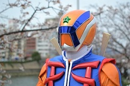
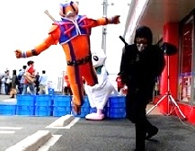
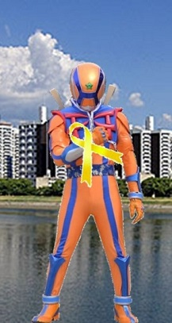

| 企画・制作・脚本・デザイン・衣裳 | 小路プロダクション |
|---|---|
| プロデューサー | 小路 隆浩 |
| キャラクター造型 | 畑部 績宇（ACE/V.O.X）・KURODA・小路プロダクション |
| 題 字 | 坂口 直樹 （宮島親善大使・書家） |

広島に住む人々の笑顔を守りたい！
すべての人が一緒に元気で笑顔になれたらいい。
ヒロシマックス スタッフの願い

『広島に住む人々の笑顔を守りたい！』
それがヒロシマックスの信念です。
子供達はもちろん、すべての人が一緒に元気で笑顔になれたらいい。そう思っています。
大人だからこそ、背負っているものってありますよね。
ヒロシマックスは、410歳（人間年齢41歳）のおじさんヒーローです。
決して、背が高く、標準語を話す、カッコいいヒーローではありません。
背が低く、くいしんぼうで広島弁を話し、楽しい事が大好きな、おじさんヒーローです。

ショーを見て、身体をより元気にするきっかけを作っていただき、ピンチに遭遇しても、あきらめないヒロシマックスを見て、
『あんなに小さい不器用なおじさんも頑張っているんだ。自分もなんとかなりそうだな。』
そう思って頂ければ光栄です。
そして、障がいを持っている人が、安心して健常者と同じように暮らせたり、みんなで楽しんだり笑ったり出来る、そんな世の中を目指していま す。ヒロシマックスはイエローリボンを応援しています。
ヒロシマックス スタッフの想い と イエローリボン

ヒロシマッ クスのスタッフにとって、イエローリボンには深い思いがあります。ヒロシマックスを立ち上げて、まだそんなに年月が経っていない頃の話です。ある作業所の方から、作業所のお祭りに来てください。と言われました。
無名の私たちを見つけて声を掛けてくださった。。。
それがとても嬉しかったのを覚えています。
まだメンバーもおらず、ヒーロー以外のキャラクターも出来ていない頃、私たちの作ったヒロシマックスの紙人形劇を真剣に見てくださり、最後にヒロ シマックスが目の前に登場した時には、観客の皆さまが驚きと喜びの声をあげてくださいました。
本当に嬉しくて有難かったのを覚えています。
テレビヒーローのキャラクターショーに入っていた頃の仲間が、2014年から手伝ってくれるようになりました。そのスタッフのお子さんは目が不自 由で、かなり近くで見なければ、文字を読むことは出来ません。
でも、言われなければ、目が不自由な事はわかりません。
子供なので、一人で歩く事がないこともあり、杖を持ってもいませんし、何かわかる物を身に付けているわけでもありません。だからでしょうか。大人 と手をつないで歩いていても、よけるに違いないと思われて、ぶつかられる事もあるそうです。
でも、目が不自由な事以外は、車のシートベルトも自分で着ける事が出来るし、折り紙も綺麗に折る事が出来たり、絵も描く事が出来る、普通の子供な のです。
この世は、障害を持たれた方よりも健常者の方がはるかに多い。
そして、障害を持たれた方に会えないことの方が多い。
でも本当は、会えないのではなく、会えていても私たち健常者が見えていないだけなのかもしれません。
広島に住むみんなが幸せになって欲しい。
だからこそヒロシマックスは、イエローリボン（障害を持つ人の自立と幸せを願うこと）を応援したいと思うのです。